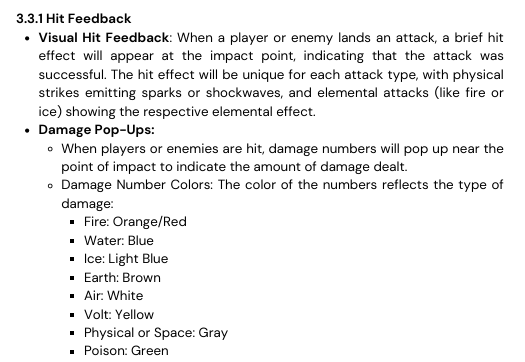
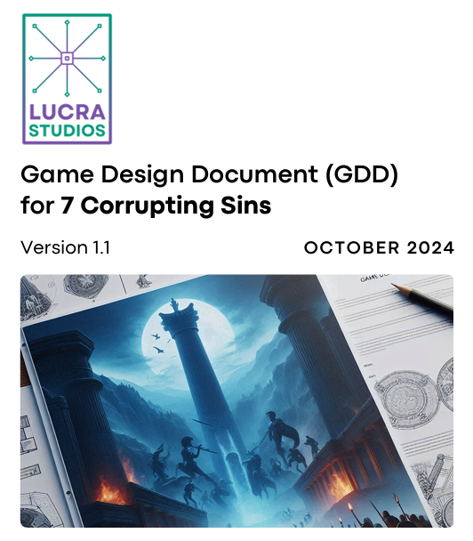
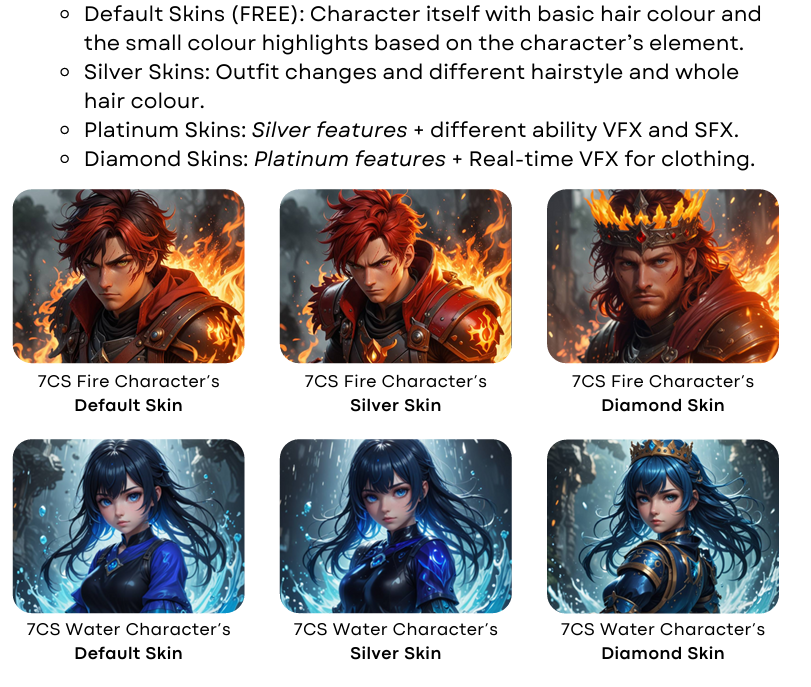
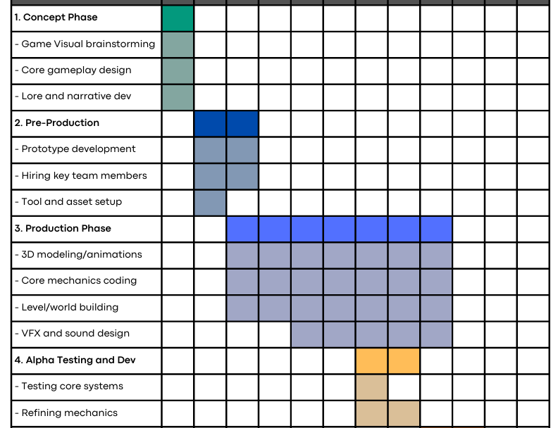
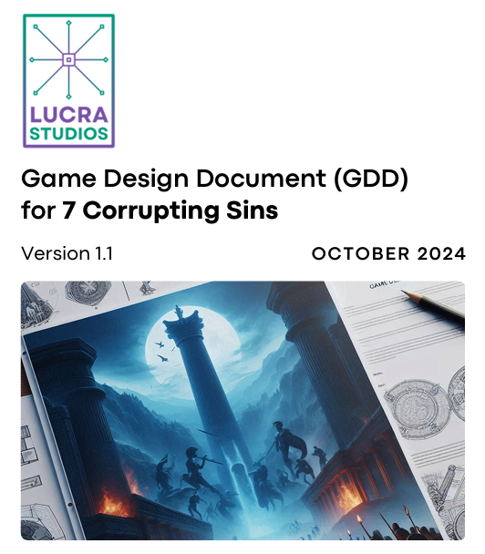
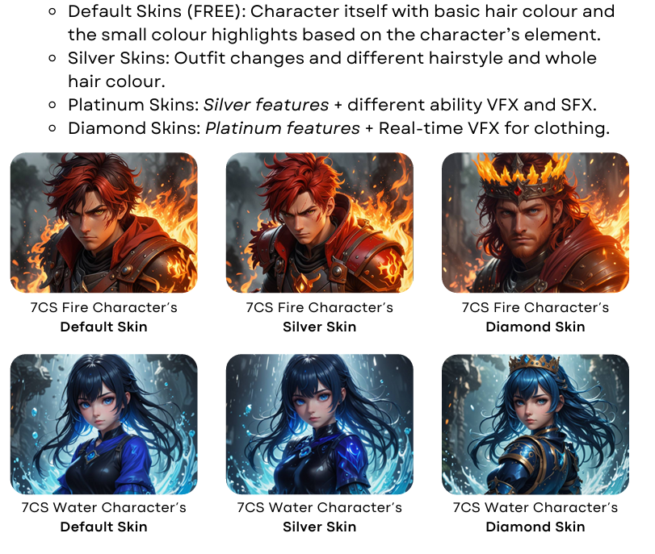
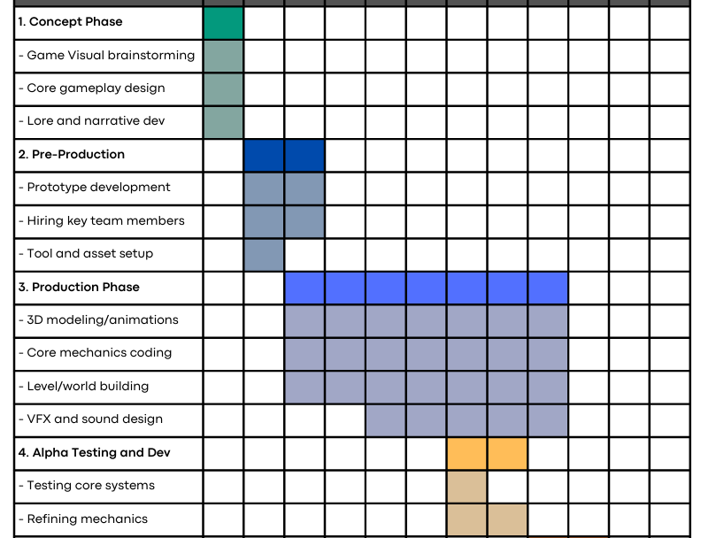
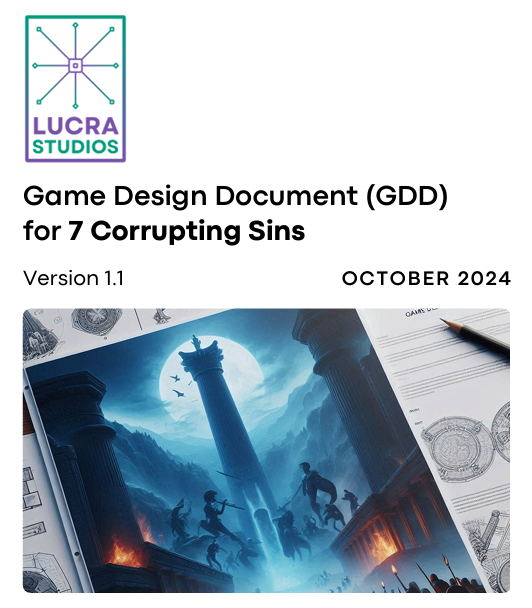
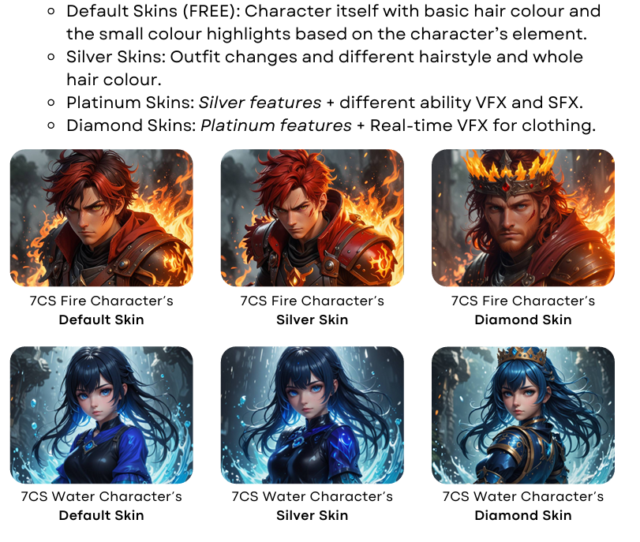
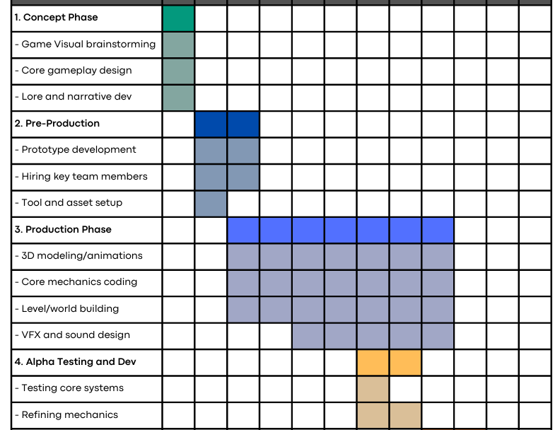

 









RPG Concept Overview
The 7 Corrupting Sins RPG is a personal game design project featuring intricate world-building and rich character backstories. Every element is designed from scratch, with ideas captured in notebooks and sketches, creating a unique and immersive experience for players.
Project Documentation
Note: The document is incomplete and it is just a demo.